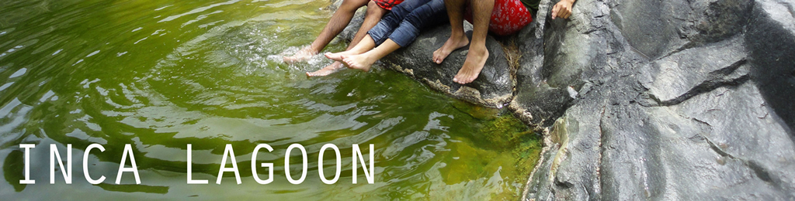
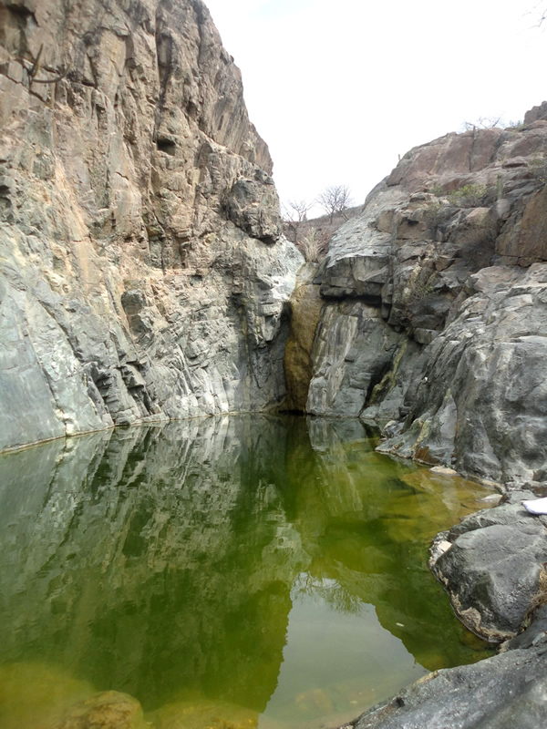
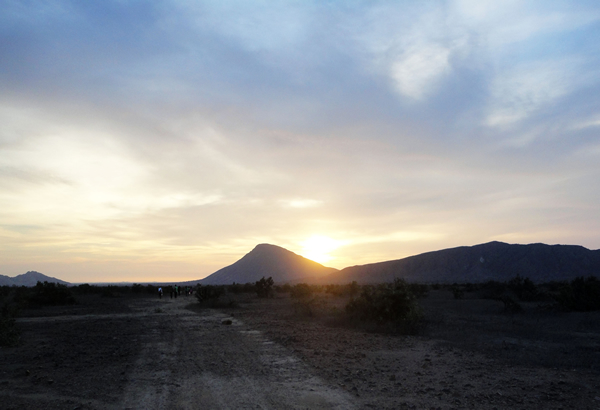
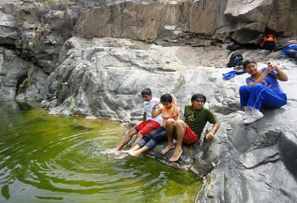

Hiking With a Splash
The “Laguna del Inca”, located in the Patapo region, is a lesser-known treasure of the area. Though it takes about a 2-hour hike to reach this location, it is well worth it. This 32-foot deep body of crystal-clear water makes for great swimming and cliff-jumping on a warm day. Come enjoy one of Lambayeque’s hidden secrets!

| Location |
| The starting point of Patapo is 15 miles (25 km) east of Chiclayo, about a 40 minute drive. From there, it is an hour drive to the hike’s starting point. |
| Price |
| Nothing (except the cost of a guide) |
| English/Spanish Tours |
| All tour guides will need to be separately hired out. We highlyrecommend a guide for this location, as the trail is not as well marked as it could be, and there is an hour drive out to the starting point. |
| Time It Takes |
| 5-6 hours (plus travel time) |

